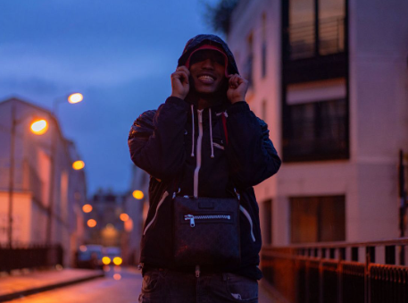
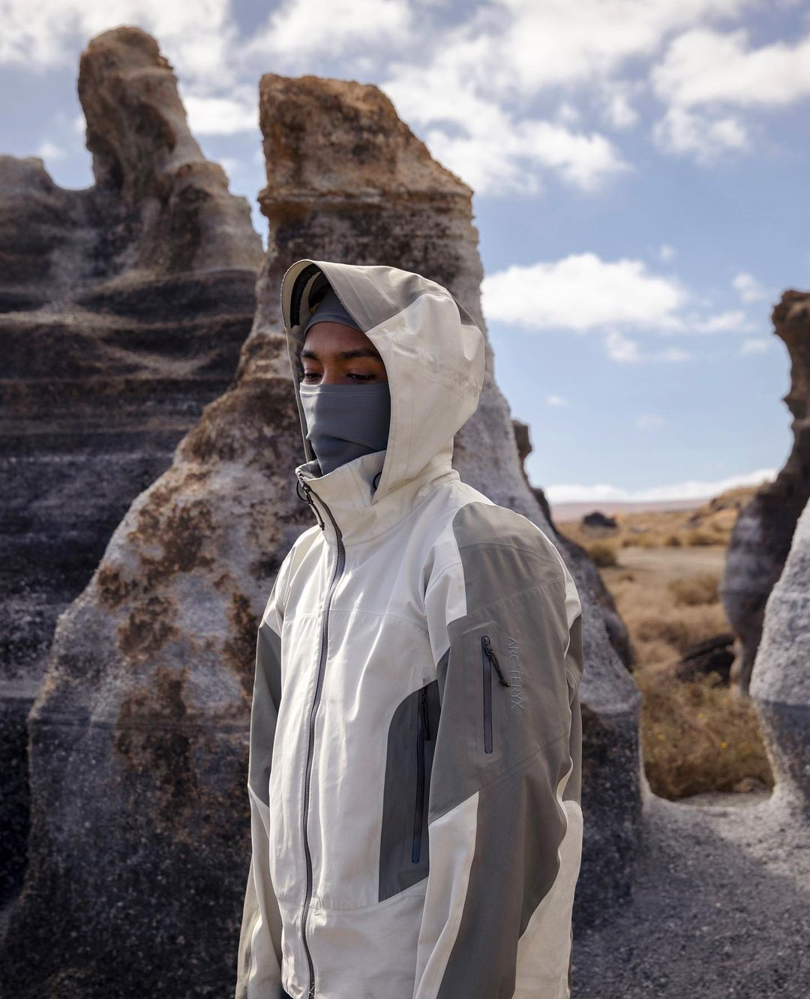

 Concernant son identité, elle est inscrite dans les crédits de ses anciens morceaux et confirmée par des photos et vidéos d'archives de son enfance, quand il avait le pseudonyme de Verso et faisait partie du Gangsta Rap de Mermoz.
Il donne sa première interview en avril 2021 pour La Face B. « On ne risque pas de m'entendre beaucoup en interview », dit-il pour l'occasion. Le rappeur est originaire de la région lyonnaise et grandit dans le quartier de Mermoz, mais est originaire des Comores par son père. Pendant son enfance, il déserte l'école. A ses 14 ans, son père l'envoie dans une école aux Comores, où il reste 3-4 ans, avant de rentrer en France, à Paris, pour se consacrer pleinement à la musique.
Dans le morceau Malade du projet Satellite naturel, Tsuki dit notamment qu'il « fait trente sons par semaine ». Une production intense confirmée dans Freestyle 1ère Faille : « J'tourne à trente sons semaine, c'est pas d'la passion c'est une maladie ». En interview, il explique que c'est vraiment le cas lorsqu'il est en forme.
 So La Lune ne se dévoile que très peu, si bien que son nom et sa date de naissance sont officiellement inconnus, l'artiste ne s'étant jamais exprimé à ce sujet.
Tous deux sont tout de même connus grâce à sa musique. Par exemple, dans Déconnecté, So dit « bougie 11, 2, 97, la naissance du loup garou », ainsi que « 11, 0, 2, 1, deux 9, 7, voilà, la ville vient d'enfanter une canaille » dans un morceau exclusif partagé sur son compte Instagram. Il est ainsi né le 11 février 1997.
So La Lune est un artiste de la New Wave, ou Nouvelle Vague, qui secoue le rap français. Il est l'un artiste des labels Low Wood et Play Two. Ce dernier est le label indépendant le plus important de l'Hexagone, avec à eux deux des artistes comme Asaf Avidan, Hatik, Julien Clerc, Lara Fabian, Gims, Jok'Air, Marc Lavoine, Elh Kmer, Tayc ou encore Yannick Noah.
Le nom de scène du rappeur, So La Lune, a plusieurs explications. D'une part, So est un adepte de la vie nocturne et il essaie de la retranscrire dans sa musique. "So" est également la dernière syllabe de son ancien nom de scène "Verso", on pourrait penser que c'est pour laisser une référence. D'autre part, les Comores, d'où il est originaire, sont appelées جزر القمر en arabe, parfois lu Jouzor-Al-Qamar, « les îles de la lune ».En outre, l'univers de l'astre est très présent dans la musique de So La Lune, qui est surnommé Tsuki, un terme qui renvoie au kanji 月 et qui signifie lune en japonais.